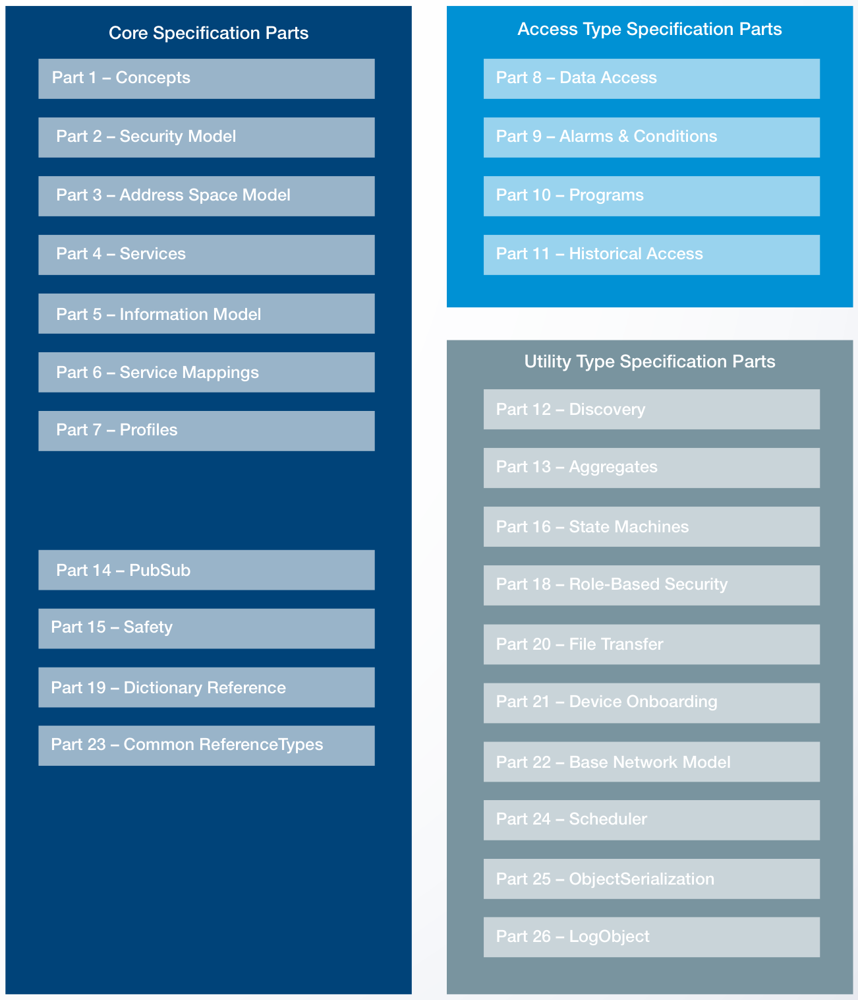

Services
"Services" คือชุดของ คำสั่ง ที่ Client ใช้คุยกับ Server — Read, Write, Subscribe, Browse, Call — บทนี้พาดู 9 Service Sets หลัก พร้อมเทียบกับ Modbus Function Codes ที่คุณรู้จักอยู่แล้ว
OPC UA เป็นมาตรฐานขนาดใหญ่
ก่อนเริ่ม — ขอเปิดภาพให้เห็นว่า OPC UA ไม่ใช่แค่เรื่อง Read/Write มาตรฐาน IEC 62541 มี 24 ส่วน (Parts) ครอบคลุมเรื่องต่างๆ ตั้งแต่ความปลอดภัย, การค้นหา, ไปจนถึงการรับส่งไฟล์:

บทนี้พุ่งเน้นที่ Part 4 — Services ซึ่งเป็นชั้นบริการที่ Client เรียกใช้ผ่าน Client-Server Pattern
9 Service Sets — บริการหลัก
OPC UA จัดบริการเป็น 9 กลุ่ม — แต่ละกลุ่มมีหลายบริการย่อย:
เทียบกับ Modbus Function Codes
ถ้าคุณคุ้นกับ Modbus จากบทเรียน PLC แล้ว — ลองดูเทียบกัน:
| ทำอะไร | Modbus Function Code | OPC UA Service |
|---|---|---|
| อ่านค่าเดียว | FC03 (Read Holding Registers) | Read |
| เขียนค่าเดียว | FC06 (Write Single Register) | Write |
| อ่าน/เขียนหลายค่าพร้อมกัน | FC23 (Read/Write Multiple) | Read/Write รับ Array ในครั้งเดียว |
| รับแจ้งค่าเปลี่ยน | ❌ ไม่มี — ต้อง Poll เอง | Subscribe → Server push ให้เอง |
| เรียกฟังก์ชัน | FC16 (Write Multiple) + ตีความเอง | Call — มี Argument + Return จริง |
| อ่านข้อมูลเก่า | ❌ ต้องเก็บแยก | HistoryRead |
| รับ Alarm | ❌ ต้องตรวจ Status Bit เอง | Events & Conditions |
| ค้นหาว่ามีอะไร | ❌ เปิด Manual | Browse |
| Authenticate | ❌ ไม่มี | Session + SecureChannel |
Read & Write — บริการที่ใช้บ่อยที่สุด
เทียบสมการให้ดู:
# Modbus (Python pseudocode)
from pymodbus.client import ModbusTcpClient
client = ModbusTcpClient('192.168.1.10')
result = client.read_holding_registers(address=0, count=1, unit=5)
raw = result.registers[0] # 235 (ตัวเลขดิบ)
temperature = raw / 10.0 # ต้อง scale เอง
# หน่วยคืออะไร? เปิด manual...
# OPC UA (Python with asyncua)
from asyncua import Client
async with Client(url='opc.tcp://plant-floor:4840') as client:
node = client.get_node('ns=2;s=TempXmitter1.CurrentValue')
temperature = await node.read_value() # 23.5 (already in °C)
unit = await node.read_attribute('EngineeringUnits') # "°C"สังเกตว่า Code ของ OPC UA สื่อความหมายตัวเอง — อ่านแล้วเข้าใจทันทีว่ากำลังอ่านอะไร ส่วน Modbus อ่านยังไงก็เห็นแค่ "register 0"
Read หลายค่าพร้อมกัน
OPC UA Read รับ Array ของ NodeId ในครั้งเดียว — ลด overhead ของ Network:
# Batch read — 1 round-trip แทนที่จะ N round-trip
node_ids = ['ns=2;s=Temp1', 'ns=2;s=Temp2', 'ns=2;s=Pressure1']
values = await client.read_values([client.get_node(n) for n in node_ids])
# values = [23.5, 76.2, 102.4]Subscribe — Server แจ้งเอง ไม่ต้อง Poll
นี่คือ Game Changer เทียบกับ Modbus:
# สร้าง Subscription
async with Client('opc.tcp://...') as client:
sub = await client.create_subscription(period=500, handler=on_change)
# ขอให้แจ้งเมื่อ Temp1 เปลี่ยน (mais ไม่เกิน 500ms ก็ Sample 1 ครั้ง)
await sub.subscribe_data_change(
client.get_node('ns=2;s=Temp1'),
sampling_interval=500, # ms
queue_size=10
)
# Handler ทำงานเมื่อค่าเปลี่ยน — Server push เอง
async def on_change(node, value, data):
print(f"{node} เปลี่ยนเป็น {value}")ใน Modbus คุณต้องเขียน Loop:
# Modbus — ต้อง Poll เอง
last = 0
while True:
val = read_modbus()
if val != last:
print(f"เปลี่ยนเป็น {val}")
last = val
sleep(0.5) # Poll every 500ms ของ slave หลายตัว = network ล่มDeadband — กรอง Noise
Subscribe สามารถใส่ Deadband ได้ — เช่น "แจ้งเฉพาะเมื่อค่าเปลี่ยนเกิน 0.5°C" — ลด traffic อย่างมีนัยสำคัญสำหรับ Analog Signal ที่มี Noise:
await sub.subscribe_data_change(
node,
deadband_type='Absolute',
deadband_value=0.5
)Method Call — ฟังก์ชันจริง พร้อม Argument
ใน Modbus ถ้าอยากสั่ง Calibrate(targetTemp=100.0, duration=30s) คุณต้อง: เขียน Magic Value ลง Register 1000, รอ Bit Status, ตีความค่าผลใน Register 1001, …
OPC UA ทำได้ตรงๆ:
method_node = client.get_node('ns=2;s=TempXmitter1.Calibrate')
parent_node = client.get_node('ns=2;s=TempXmitter1')
# Call method — รับ argument พร้อม return value
result = await parent_node.call_method(
method_node,
100.0, # targetTemp (Double)
30 # duration in seconds (UInt32)
)
# result = สถานะ + ค่าใหม่ที่ Calibrate แล้วMethod มี Input Arguments และ Output Arguments ที่นิยามใน Information Model Client ที่ Browse เจอจะรู้ทันทีว่าต้องส่ง argument อะไรไปบ้าง
Historical Access — ข้อมูลย้อนหลังในตัว
Server สามารถ buffer ค่าย้อนหลังของแต่ละ Variable — Client เรียก HistoryRead ดึงข้อมูลตามช่วงเวลาได้:
# อ่าน Temperature ของ Sensor นี้ย้อนหลัง 1 ชั่วโมง
node = client.get_node('ns=2;s=Temp1')
history = await node.read_raw_history(
start_time=datetime.now() - timedelta(hours=1),
end_time=datetime.now(),
num_values=0 # all
)
for dv in history:
print(f"{dv.SourceTimestamp} {dv.Value.Value}")ยังมี Aggregate Functions ในตัว — Average, Min, Max, StandardDeviation — ที่ Server คำนวณให้ Client ไม่ต้องดึงข้อมูลดิบทั้งหมดมา process เอง
Events & Conditions — Alarms ที่ฉลาด
Modbus ส่ง Alarm โดย toggle Status Bit แล้วให้ Master Poll — ไม่มีรายละเอียดว่าทำไม Alarm ใครเป็นผู้รับ Alarm ใครต้อง Ack
OPC UA มี Model ของ Alarm ในตัว:
- Event — เหตุการณ์ครั้งเดียว (เช่น "Production Lot Completed")
- Condition — สถานะที่คงอยู่ (เช่น "Temperature High")
- Alarm = Condition ที่ต้อง Acknowledge หรือ Confirm
แต่ละ Alarm มีข้อมูลครบ:
Event ที่ Client ได้รับ:
EventId : Unique ID
Time : 2026-05-19 14:32:17.123
Source : TempXmitter1
Message : "Temperature exceeded HighHigh limit"
Severity : 900 (range 1-1000)
Active : true
Acknowledged : false
Comment : (User comment ที่ใส่ตอน Ack)
หลายภาษาในตัว — Message field รองรับ LocalizedText — Client เลือกภาษาที่ต้องการ
Server ก็ส่ง Message ให้ในภาษานั้น (เช่น ไทย/อังกฤษ)
Browse + TranslateBrowsePath
Browse ไม่ได้แค่เดินไปตามต้นไม้ — รองรับการเขียน path แบบ Filesystem ได้ด้วย:
# แทนที่จะใช้ NodeId (ที่จำยาก):
node = client.get_node('ns=2;s=TempXmitter1.CurrentValue')
# ใช้ BrowsePath (เหมือน path ของไฟล์):
node = await client.nodes.objects.get_child([
"2:FieldBus",
"2:TempXmitter1",
"2:CurrentValue"
])Server แปล Path เป็น NodeId ให้ — Code อ่านง่ายขึ้นมาก
สรุปบทที่ 04
- OPC UA มี 9 Service Sets — ที่ใช้บ่อยที่สุดคือ View (Browse), Attribute (Read/Write), MonitoredItem/Subscription, Method (Call)
- Read/Write รับ Array หลายค่าในครั้งเดียว — ลด Network round-trip
- Subscribe เปลี่ยนพฤติกรรมจาก Poll → Push — Server แจ้งเมื่อค่าเปลี่ยน + Deadband กรอง Noise ได้
- Method Call เป็นฟังก์ชันจริง รับ Argument ส่งคืน Return value — ไม่ใช่ trick กับ Register
- Historical Access + Aggregates ในตัว — ไม่ต้องเขียน Historian แยก
- Events & Conditions มี Model ครบ — Severity, Acknowledgment, Multi-language messages
- ทุก Service ผ่าน SecureChannel เข้ารหัสในตัว (ดูบทที่ 06)
บทต่อไปจะดู PubSub — รูปแบบการสื่อสารอีกแบบที่เหมาะกับ Many-to-Many และ Cloud